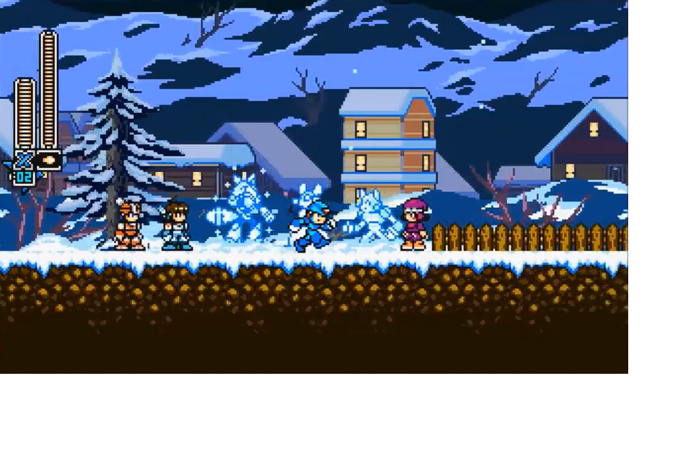

Videogame Music


Videogame focused compositions, combining narrative context and immersion. These samples are trying to emulate the 8bit era, with a touch of modern processing.
Audio Engineer • Composer
Creating the sound you are looking for

Videogame focused compositions, combining narrative context and immersion. These samples are trying to emulate the 8bit era, with a touch of modern processing.
As we already know, context is everything! Give it a try and choose the tone for your project
Explora esta selección de canciones con estilos variados. Cada pista tiene su propio reproductor integrado y puedes escuchar todas en orden o saltar entre ellas.
KotaMusic - Battle Agains The Champion
KotaMusic - Bobomb Playground
KotaMusic - Space Foxes
KotaMusic - Pirate
KotaMusic - Hero's Pushing Towards Enemy Castle
KotaMusic - Ghostly Ghost Gang
Diseño sonoro enfocado en narrativa e inmersión.
Soy ingeniero en sonido especializado en mezcla, mastering y postproducción audiovisual. Mi enfoque combina precisión técnica con creatividad artística para lograr resultados potentes, modernos e inmersivos.